청소년상담사-1급(1교시) (2020-10-10 기출문제)
1과목: 상담사 교육 및 사례지도
1. 수퍼비전에 관한 설명으로 옳은 것은?
- 수퍼비전은 연속적이라는 점에서 자문과 유사하다.
- 수퍼비전은 평가적이라는 점에서 상담과 유사하다.
- 수퍼비전은 동등한 관계에서 이루어진다는 점에서 자문과 유사하다.
- 수퍼비전은 수련생의 문제 행동, 사고, 감정을 다룬다는 점에서 상담과 유사하다.
- 수퍼비전은 수련생과 내담자의 필요에 의해 수행된다는 점에서 교수(teaching)와 유사하다.
(정답률: 47%)

2. 사례개념화 요소에 해당하는 것을 모두 고른 것은?
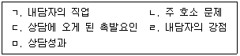
- ㄱ, ㄴ
- ㄷ, ㅁ
- ㄱ, ㄴ, ㄷ, ㄹ
- ㄴ, ㄷ, ㄹ, ㅁ
- ㄱ, ㄴ, ㄷ, ㄹ, ㅁ
(정답률: 46%)
3. 수퍼비전에서 사용하는 기법에 관한 설명이다. ( )에 공통적으로 들어갈 단어로 옳은 것은?
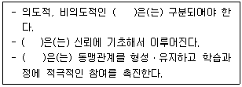
- 직면
- 자기개방
- 정보제공
- 비밀유지
- 지지하기
(정답률: 50%)
4. 수퍼비전에서 나타나는 병행과정에 관한 설명으로 옳지 않은 것은?
- 병행과정의 통로는 상담자이다.
- 병행과정은 일종의 성찰과정이다.
- 삼자관계는 병행과정의 기초가 된다.
- 병행과정은 전이-역전이와 관련이 있다.
- 수련생의 미해결 문제는 병행과정의 산물이다.
(정답률: 47%)
5. 보딘(E. Bordin)이 제시한 수퍼비전에서의 작업동맹에 관한 설명으로 옳은 것을 모두 고른 것은?
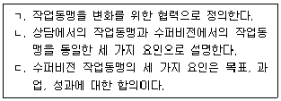
- ㄱ
- ㄱ, ㄴ
- ㄱ, ㄷ
- ㄴ, ㄷ
- ㄱ, ㄴ, ㄷ
(정답률: 28%)
6. 사례에서 변별 모델에 근거한 수퍼바이저의 역할과 수퍼비전 초점 영역을 옳게 연결한 것은?
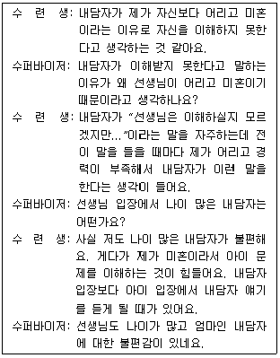
- 상담자 - 개인화
- 교사 - 개입
- 자문가 - 개념화
- 교사 - 개인화
- 상담자 - 개념화
(정답률: 58%)
7. 다음에서 수퍼바이저가 수련생에게 지도하고 있는 상담기법으로 옳은 것은?
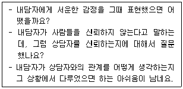
- 감정반영
- 해석
- 즉시성
- 탐색적 질문
- 지지하기
(정답률: 31%)
8. 프라울리-오디아(M. Frawley-O'Dea)와 샤멋(J. Samat)의 관계 모델에 관한 설명으로 옳지 않은 것은?
- 정신분석 이론에 기초한다.
- 수퍼비전을 위한 유용한 개념도를 제시한다.
- 수퍼바이저는 내담자, 수련생, 수련생-내담자의 관계에 초점을 맞춘다.
- 수퍼바이저는 교사 역할, 질문자 역할, 수련생의 정서를 담는 역할을 한다.
- 수퍼바이저의 권위는 수퍼바이저-수련생과의 관계 속에 존재한다.
(정답률: 36%)
9. 왓킨스(C. Watkins)의 수퍼바이저 발달단계에 해당하는 것을 모두 고른 것은?
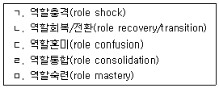
- ㄱ, ㄷ
- ㄴ, ㄷ, ㄹ
- ㄱ, ㄴ, ㄹ, ㅁ
- ㄴ, ㄷ, ㄹ, ㅁ
- ㄱ, ㄴ, ㄷ, ㄹ, ㅁ
(정답률: 43%)
10. 수퍼비전 과정에서 나타나는 역전이에 관한 설명으로 옳지 않은 것은?
- 수련생의 역전이는 수퍼비전의 강력한 학습도구이다.
- 수련생에게 강한 부정적 감정을 경험할 때 수퍼바이저의 역전이를 점검해야 한다.
- 수퍼비전에서의 역전이는 긍정적이거나 부정적인 형태로 나타난다.
- 수퍼바이저가 수련생의 역전이를 자주 다룰수록 수련생의 개방성은 낮아진다.
- 수련생이 내담자에 대해 부정적이고 병리적인 측면을 강조해서 설명할 때 수련생의 역전이를 다뤄야 한다.
(정답률: 25%)
11. 캐두신(A. Kadushin)의 수퍼비전 게임에 관한 설명으로 옳은 것을 모두 고른 것은?
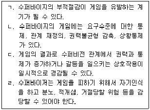
- ㄱ, ㄴ
- ㄷ, ㄹ
- ㄱ, ㄴ, ㄹ
- ㄴ, ㄷ, ㄹ
- ㄱ, ㄴ, ㄷ, ㄹ
(정답률: 25%)
12. 다음에 제시된 그리피스(B. Griffith)와 프라이든(G. Frieden)의 수퍼비전 개입기법의 목적으로 옳은 것은?
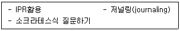
- 자기성찰의 향상
- 역전이 인식
- 수련생의 저항 감소
- 수련생의 불안 감소
- 수퍼비전 관계의 형성
(정답률: 43%)
13. 다음 반응을 사용하는 수퍼바이저의 이론적 배경으로 옳은 것은?
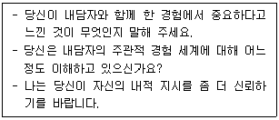
- 인간중심 이론
- 정신분석 이론
- 통합발달 모델
- 행동주의 이론
- 도식중심 이론
(정답률: 31%)
14. 수퍼비전 첫 회기에 검토해야 할 사항에 해당하지 않는 것은?
- 수퍼바이지의 현재 발달수준
- 수퍼비전과 관련된 윤리적 문제
- 수퍼비전의 구조화
- 수퍼비전의 성과
- 위기관리(개입) 전략
(정답률: 31%)
15. 코리, 코리와 캘러넌(G. Corey, M. Corey, & P. Callanan)이 제안한 윤리적 의사결정 과정 중 '잠재적 문제 찾기' 단계에 해당하는 것은?
- 중요한 사안을 목록화하고 기술하되 불필요한 것들을 정리한다.
- 문제에 대한 다른 관점을 얻기 위해 동료에게 자문을 구한다.
- 상황을 설명해 줄 수 있는 모든 정보를 가능한 많이 수집한다.
- 윤리적 갈등 상황에서 적용 가능한 관련 법규에 대한 최신 정보를 습득한다.
- 여러 가지 가능한 조치를 고려할 때 내담자, 수퍼바이지 및 다른 전문가들과 브레인스토밍을 한다.
(정답률: 25%)
16. 수퍼바이저의 역할과 책임인 '사전동의(informed consent)'에 관한 설명으로 옳지 않은 것은?
- 수퍼바이지와의 사전동의는 계약의 의미를 지닌다.
- 누가 수퍼비전을 하는지에 대해 내담자에게 알리도록 한다.
- 수퍼바이지의 자격에 대해 내담자에게 알리도록 한다.
- 수퍼비전이 언제 진행되는지에 대해 수퍼비전 종료 후 내담자에게 알리도록 한다.
- 사전동의는 수퍼바이지의 불안을 덜어주는 효과가 있다.
(정답률: 39%)
17. 다음과 같이 수퍼바이저의 역할을 제시한 모델은?
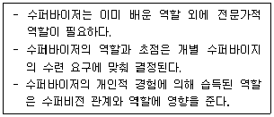
- 변별 모델
- 성찰학습 모델
- 행동주의 수퍼비전 모델
- 해결중심 수퍼비전 모델
- 인지행동 수퍼비전 모델
(정답률: 24%)
18. 능력이 부족한 수련생에 대한 조치사항으로 옳지 않은 것은?
- 수련을 중단하는 경우 그 이유에 대해 서면으로 기술한다.
- 수련생의 학업성적이 좋다면 역기능적인 대인관계 행동에 대한 조치는 고려하지 않는다.
- 수퍼바이저는 성격장애를 가진 수련생을 위한 조치를 취할 윤리적 책임이 있다.
- 수퍼비전 횟수의 증가, 실습 또는 인턴십 반복 등 문제 교정을 위한 조치를 취해야 한다.
- 능력이 부족한 수련생에 대한 조치가 모두 실패한 경우, 마지막 조치는 수련 프로그램에서 배제하는 것이다.
(정답률: 34%)
19. 체제적 접근 모델(SAS)에 관한 설명으로 옳지 않은 것은?
- 수퍼바이저와 수퍼바이지 양쪽 모두의 책임을 강조한다.
- 힘과 관여의 구조 속에서 수퍼비전 관계가 발달한다.
- 발달 단계에서 수퍼바이저는 교육적 개입을 사용한다.
- 성숙 단계에서 수퍼바이지는 수퍼바이저에게 의존하는 성향이 줄어들고 관계에서 힘의 구조가 변한다.
- 종결 단계에서 수퍼바이지는 점차 독립적인 수행을 하게 된다.
(정답률: 28%)
20. 수퍼바이저가 수퍼비전과 상담을 병행하는 것에 관한 설명으로 옳은 것을 모두 고른 것은?
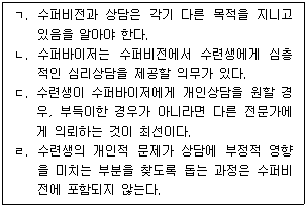
- ㄴ
- ㄱ, ㄷ
- ㄷ, ㄹ
- ㄱ, ㄴ, ㄹ
- ㄱ, ㄴ, ㄷ, ㄹ
(정답률: 34%)
21. 정신분석이론에 입각한 수퍼바이저의 반응에 해당하는 것을 모두 고른 것은?
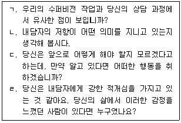
- ㄱ, ㄴ
- ㄷ, ㄹ
- ㄱ, ㄴ, ㄹ
- ㄴ, ㄷ, ㄹ
- ㄱ, ㄴ, ㄷ, ㄹ
(정답률: 50%)
22. 사례에서 수퍼바이저가 취해야 할 행동으로 옳지 않은 것은?
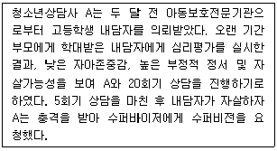
- 자살 평가와 개입방법에 대해 수퍼바이지와 재검토한다.
- 수퍼바이지가 이 일에 대한 책임감에서 벗어나도록 해결책을 제시하는 것을 최우선으로 한다.
- 이 상황이 수퍼바이지에게 어떤 영향을 미치는지 이해하도록 돕는다.
- 자살행동 이전 몇 회기동안 있었던 일에 대해 보고서를 작성하게 한다.
- 수퍼바이지에게 필요시 상담을 받도록 안내한다.
(정답률: 34%)
23. 행동주의 수퍼비전에 관한 설명으로 옳은 것을 모두 고른 것은?
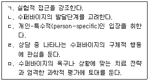
- ㄱ, ㄴ
- ㄷ, ㄹ
- ㄱ, ㄷ, ㄹ
- ㄱ, ㄴ, ㄷ, ㄹ
- ㄱ, ㄴ, ㄷ, ㄹ, ㅁ
(정답률: 34%)
24. 스코볼트(T. Skovholt)와 로네스타드(M. Rønnestad)의 전생애 발달 모델 중 '초보 전문가 상태'에 관한 설명으로 옳은 것은?
- 다른 사람을 도와준 경험이 있다.
- 의존적이고 상처받기 쉬우며 불안이 높다.
- 올바르게 행해야 한다는 압력을 느낀다.
- 융통성 있고 개인화된 기법을 사용한다.
- 상담에 자신의 성격을 통합한다.
(정답률: 31%)
25. 수련생 B는 결혼 5년 만에 배우자의 외도로 이혼을 하게 되었다. 그 후 수퍼비전 일정을 자주 변경하고 준비를 제대로 해오지 않을 뿐 아니라 내담자들에 대한 불만과 부정적 감정을 자주 이야기하였다. B에 대한 수퍼바이저의 행동으로 옳은 것을 모두 고른 것은?
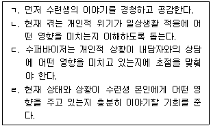
- ㄱ
- ㄴ, ㄷ
- ㄷ, ㄹ
- ㄱ, ㄷ, ㄹ
- ㄱ, ㄴ, ㄷ, ㄹ
(정답률: 37%)
2과목: 청소년 관련 법과 행정
26. 여성가족부에서 청소년증의 발급 및 운영에 관한 사항을 담당하는 부서는?
- 청소년정책과
- 청소년활동진흥과
- 청소년자립지원과
- 청소년복지지원과
- 청소년보호환경과
(정답률: 28%)
27. 2020년 5월, 여성가족부에서 발표한 '포용국가 청소년정책'의 비전으로 옳은 것은?
- 3.1운동 100년, 다시 청소년이다!
- 청소년 눈높이에서, 청소년이 주도하여, 청소년정책을 새롭게 혁신
- 현재를 즐기는 청소년, 미래를 여는 청소년, 청소년을 존중하는 사회
- 새로운 100년, 이제는 청소년이다!
- 청소년이 행복한 세상, 청소년이 꿈꾸는 밝은 미래
(정답률: 28%)
28. 청소년관련 기구 및 기관 중 설치 근거 법령이 같은 것끼리 묶은 것은?
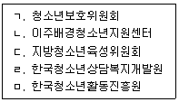
- ㄱ, ㄴ
- ㄱ, ㄷ
- ㄴ, ㄷ
- ㄴ, ㄹ
- ㄹ, ㅁ
(정답률: 25%)
29. 1998년에 개정된 대한민국 청소년헌장의 내용 일부이다. ( )에 들어갈 용어로 옳은 것은?
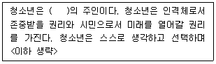
- 대한민국
- 행복
- 오늘
- 새 시대
- 자기 삶
(정답률: 28%)
30. 청소년 관련법의 제정연도가 빠른 순서대로 나열한 것은?
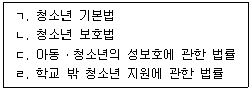
- ㄱ - ㄴ - ㄷ - ㄹ
- ㄱ - ㄷ - ㄴ - ㄹ
- ㄱ - ㄷ - ㄹ - ㄴ
- ㄴ - ㄱ - ㄷ - ㄹ
- ㄴ - ㄱ - ㄹ - ㄷ
(정답률: 50%)
31. 청소년복지 지원법령상 청소년치료재활센터 시설장의 자격기준으로 옳은 것은?
- 청소년치료재활 관련 분야 박사학위를 취득한 사람으로서 관련 분야 실무경력이 3년 이상인 사람
- 청소년치료재활 관련 분야 석사학위를 취득한 사람으로서 관련 분야 실무경력이 7년 이상인 사람
- 청소년상담사, 청소년지도사 자격을 소지한 사람으로서 관련 분야 실무경력이 5년 이상인 사람
- 지방자치단체에서 5급 이상 공무원으로서 청소년치료재활 관련 분야 실무에 3년 이상 종사한 사람
- 정신건강의학과전문의 자격을 소지한 사람으로서 관련 분야 실무경력이 1년 이상인 사람
(정답률: 34%)
32. 청소년복지 지원법령상 청소년의 우대 등에 관한 내용으로 옳지 않은 것은?
- 지방자치단체는 그가 운영하는 수송시설ㆍ문화시설을 청소년이 이용하는 경우 그 이용료를 면제하거나 할인할 수 있다.
- 지방자치단체가 운영하는 시설의 이용료를 할인받으려는 청소년은 시설의 관리자에게 주민등록증, 청소년증 등 나이를 확인할 수 있는 증표 또는 자료를 제시하여야 한다.
- 이용료를 면제받거나 할인받을 수 있는 대상은 9세 이상 24세 이하의 모든 청소년이다.
- 청소년증의 발급 대상은 9세 이상 18세 이하의 청소년이다.
- 청소년증은 다른 사람에게 양도하거나 빌려주어서는 아니 된다.
(정답률: 46%)
33. 청소년복지 지원법상 실태조사에 관한 내용이다. ( )에 들어갈 숫자로 옳은 것은?
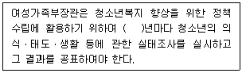
- 1
- 2
- 3
- 5
- 7
(정답률: 17%)
34. 청소년복지 지원법령상 지역사회 청소년통합지원체계 구성 시 반드시 포함하여야 하는 필수연계기관별 협력의무 내용으로 옳지 않은 것은?
- 지방고용노동관서: 위기청소년에 대하여 직업훈련 또는 취업지원을 요청하는 경우 이에 대한 협조
- 공공보건의료기관: 위기청소년에 대하여 진료 또는 치료지원을 요청하는 경우 이에 대한 협조
- 청소년복지시설: 청소년에 대한 일시ㆍ단기 또는 중장기적 보호 협조
- 보호관찰소: 빈곤가정 청소년에 대하여 전문적인 상담ㆍ복지서비스의 제공이 필요하다고 판단되는 경우 상담ㆍ복지지원 등 의뢰
- 경찰관서: 가출 등으로 위기상황에 처한 청소년을 발견한 경우 보호 의뢰 및 긴급구조를 필요로 하는 위기청소년에 대한 구조 협조
(정답률: 34%)
35. 청소년 기본법령상 청소년상담사의 배치기준이 옳지 않은 것은?
- 시ㆍ도 청소년상담복지센터: 청소년상담사 3명 이상
- 청소년자립지원관: 청소년상담사 1명 이상
- 청소년쉼터: 청소년상담사 1명 이상
- 시ㆍ군ㆍ구 청소년상담복지센터: 청소년상담사 1명 이상
- 청소년치료재활센터: 청소년상담사 3명 이상
(정답률: 34%)
36. 청소년 기본법령상 청소년정책위원회에 관한 내용으로 옳지 않은 것은?
- 위원장은 여성가족부장관이 된다.
- 위촉위원의 임기는 3년으로 한다.
- 전문적인 사항을 조사ㆍ연구하기 위하여 위원회에 5명 이내의 전문위원을 둘 수 있다.
- 경찰청장과 보건복지부차관은 위원에 포함된다.
- 위원장 1명을 포함하여 30명 이내의 위원으로 구성한다.
(정답률: 10%)
37. 청소년 기본법령상 청소년상담사 자격제도에 관한 내용으로 옳은 것을 모두 고른 것은?
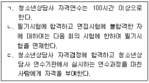
- ㄴ
- ㄱ, ㄴ
- ㄱ, ㄷ
- ㄴ, ㄷ
- ㄱ, ㄴ, ㄷ
(정답률: 31%)
38. 청소년 기본법상 청소년육성기금의 조성 재원에 해당하는 것을 모두 고른 것은?
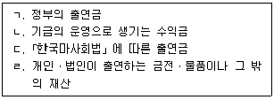
- ㄱ, ㄴ
- ㄱ, ㄷ
- ㄱ, ㄴ, ㄹ
- ㄴ, ㄷ, ㄹ
- ㄱ, ㄴ, ㄷ, ㄹ
(정답률: 25%)
39. 학교 밖 청소년 지원에 관한 법령상 ( )에 들어갈 내용이 순서대로 옳은 것은?
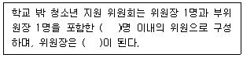
- 15, 여성가족부차관
- 15, 여성가족부장관
- 20, 여성가족부차관
- 20, 여성가족부장관
- 30, 여성가족부차관
(정답률: 24%)
40. 학교 밖 청소년 지원에 관한 법령상 비밀유지 의무에 관한 내용이다. ( )에 들어갈 숫자가 순서대로 옳은 것은?
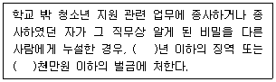
- 1, 1
- 1, 2
- 2, 2
- 3, 2
- 3, 3
(정답률: 25%)
41. 소년법상 보호처분에 관한 내용으로 옳지 않은 것은?
- 사회봉사명령 처분은 14세 이상의 소년에게만 할 수 있다.
- 사회봉사명령은 200시간을 초과할 수 없다.
- 장기로 소년원에 송치된 소년의 보호기간은 1년을 초과하지 못한다.
- 장기 소년원 송치 처분은 12세 이상의 소년에게만 할 수 있다.
- 단기로 소년원에 송치된 소년의 보호기간은 6개월을 초과하지 못한다.
(정답률: 40%)
42. 소년법상 소년부 판사의 보호처분 결정이 현저히 부당한 경우, 관할 가정법원 또는 지방법원 본원 합의부에 항고를 제기할 수 있는 기간은?
- 7일
- 10일
- 15일
- 20일
- 30일
(정답률: 25%)
43. 학교폭력예방 및 대책에 관한 법률상 ( )에 들어갈 내용이 순서대로 옳은 것은?
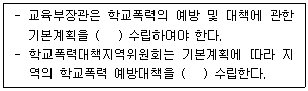
- 3년마다, 매년
- 3년마다, 3년마다
- 5년마다, 매년
- 5년마다, 3년마다
- 5년마다, 5년마다
(정답률: 39%)
44. 학교폭력예방 및 대책에 관한 법률상 학교의 장에 관한 내용으로 옳은 것은?
- 학교의 장은 학교폭력의 예방 및 대책 등을 위한 교직원 및 학부모에 대한 교육을 학기별로 2회 이상 실시하여야 한다.
- 학교의 장은 학교폭력 사태를 인지한 경우 지체 없이 전담기구 또는 소속 교원으로 하여금 가해 및 피해 사실 여부를 확인하도록 한다.
- 학교의 장은 교감, 전문상담교사, 학부모 등으로 학교폭력문제를 담당하는 전담기구를 구성하며, 이 경우 학부모는 전담기구 구성원의 2분의 1 이상이어야 한다.
- 학교의 장은 학교폭력사건을 자체적으로 해결하려는 경우 학교폭력의 경중에 대한 전담기구의 서면 확인 및 심의 절차를 거치지 않아도 된다.
- 학교의 장은 학생의 육체적ㆍ정신적 보호와 학교폭력의 예방을 위한 학생들에 대한 교육을 학기별로 2회 이상 실시하여야 한다.
(정답률: 31%)
45. 청소년활동 진흥법령상 청소년운영위원회에 관한 내용이다. ( )에 들어갈 내용으로 옳은 것은?
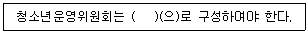
- 5명 이상 10명 이하의 청소년
- 5명 이상 10명 이하의 청소년과 청소년지도자
- 10명 이상 15명 이하의 청소년과 청소년지도자
- 10명 이상 20명 이하의 청소년
- 10명 이상 20명 이하의 청소년과 청소년지도자
(정답률: 25%)
46. 청소년활동 진흥법령의 내용으로 옳지 않은 것은?
- 수련시설의 운영대표자는 시설에 대하여 정기 안전점검 및 수시 안전점검을 실시하여야 한다.
- 수련시설의 운영대표자는 그 종사자에 대하여 2년마다 1회 이상 수련시설의 운영ㆍ안전ㆍ위생 등에 관한 교육을 실시하여야 한다.
- 여성가족부장관은 수련시설에 대한 종합평가를 2년마다 1회 이상 실시하여야 한다.
- 여성가족부장관 또는 시장ㆍ군수ㆍ구청장은 수련시설에 대한 종합 안전ㆍ위생점검을 2년마다 1회 이상 실시하여야 한다.
- 여성가족부장관은 수련시설에 대한 종합평가를 실시하려면 미리 수련시설의 운영대표자에게 그 종합평가의 절차, 방법 및 기간을 통보하여야 한다.
(정답률: 17%)
47. 아동ㆍ청소년의 성보호에 관한 법률의 내용이다. ( )에 들어갈 숫자로 옳은 것은?
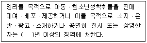
- 1
- 2
- 3
- 4
- 5
(정답률: 25%)
48. 아동ㆍ청소년의 성보호에 관한 법률상 성범죄로 유죄판결이 확정된 자에 대한 공개정보에 해당하는 것을 모두 고른 것은?
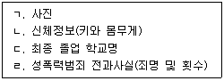
- ㄴ, ㄷ
- ㄱ, ㄴ, ㄹ
- ㄱ, ㄷ, ㄹ
- ㄴ, ㄷ, ㄹ
- ㄱ, ㄴ, ㄷ, ㄹ
(정답률: 47%)
49. 청소년 보호법령상 청소년의 유해환경에 대한 접촉실태 조사 실시에 관한 내용이다. ( )에 들어갈 숫자로 옳은 것은?
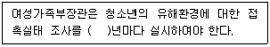
- 1
- 2
- 3
- 5
- 7
(정답률: 17%)
50. 청소년 보호법령상 유해매체물 심의 분과위원회에 관한 내용으로 옳지 않은 것은?
- 유해매체물 심의 분과위원회는 매체물별로 둘 수 있다.
- 위원장 1명을 포함하여 15명 이내의 위원으로 구성한다.
- 위원은 여성가족부장관이 위촉한다.
- 위원장은 위원 중에서 호선(互選)한다.
- 위원의 임기는 2년으로 한다.
(정답률: 17%)
3과목: 상담연구방법론의 실제
51. 상담연구방법 중 질적 패러다임의 경향이 아닌 것은?
- 질적 연구의 철학적 기반은 실증주의를 따른다.
- 상담과정과 연구과정을 통합하려 한다.
- 다양한 방법들을 통합하려 한다.
- 탐구대상과 관련된 모든 자료를 가치있게 여긴다.
- 상담과정을 탐구하는 방법들이 상담학 내에서 자체 생산된다.
(정답률: 39%)
52. 분산성의 지표로서 분산()과 표준편차()의 특성을 설명한 것으로 옳지 않은 것은?
- 편차가 제곱되면 불균등하게 커지므로 분산은 평균치로부터의 이탈에 민감하다.
- 점수들의 분산성이 증가하면 통계적 분산도 증가한다.
- 만일 점수들 간에 아무런 분산성이 없다면 분산과 표준편차는 0이다.
- 어떤 조건하에서 분산은 분할될 수 있고, 분할된 부분들은 상이한 근원에 귀인될 수 있다.
- 표준편차를 구할 때 평균을 기준으로 하는 것은 편차 제곱의 합이 최대가 되기 때문이다.
(정답률: 43%)
53. 가설의 특징으로 옳은 것을 모두 고른 것은?
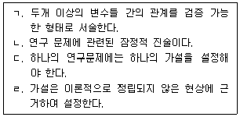
- ㄱ, ㄴ
- ㄱ, ㄷ
- ㄴ, ㄷ
- ㄱ, ㄴ, ㄷ
- ㄴ, ㄷ, ㄹ
(정답률: 55%)
54. 한 검사의 평균이 200점이고 표준편차가 50인 정규분포에서 이 검사의 250점과 150점 사이에 포함되는 사례들은 전체 집단의 몇 %로 추정할 수 있는가?
- 36.16%
- 50.00%
- 68.26%
- 81.85%
- 95.44%
(정답률: 54%)
55. 변수에 관한 설명으로 옳지 않은 것은?
- 변수란 각 사람에 따라서 변화적이라는 의미이다.
- 변수의 연구는 사회현상의 이해에 도움을 준다.
- 변수를 기반으로 조작화하여 측정한다.
- 매개변수는 독립변수와 종속변수에 동시에 영향을 미치는 변수를 말한다.
- 외생변수는 독립ㆍ조절ㆍ매개ㆍ종속변수 간의 관계에 영향을 미칠 수 있다.
(정답률: 50%)
56. ( )에 들어갈 척도의 명칭이 순서대로 옳은 것은?
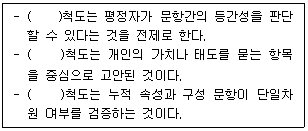
- 리커트, 서스톤, 거트만
- 거트만, 리커트, 서스톤
- 리커트, 거트만, 서스톤
- 서스톤, 거트만, 리커트
- 서스톤, 리커트, 거트만
(정답률: 25%)
57. 다음 특성을 공통적으로 갖는 표집방법은?
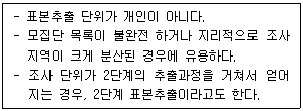
- 층화표본추출
- 군집표본추출
- 계통표본추출
- 이중표본추출
- 적합표본추출
(정답률: 50%)
58. 관찰법에 관한 설명으로 옳지 않은 것은?
- 관찰연구의 첫 단계는 관찰대상자와 친근감을 형성하는 단계이다.
- 어떤 특수한 상황에서 일어나는 행동을 자세히 연구하고자 할 때 선호하는 방법이다.
- 감각기관을 사용하여 자료를 수집하는 방법이다.
- 참여관찰은 조사대상집단과 장기간 함께 지내며 관찰하는 것이다.
- 구조화 관찰(structured observation)은 관찰 내용이 체계화되고, 절차와 규칙에 맞춰 관찰하는 것이다.
(정답률: 43%)
59. 다음 중 비율척도를 모두 고른 것은?
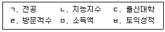
- ㄱ, ㄴ
- ㄴ, ㄷ
- ㄹ, ㅁ
- ㄴ, ㄷ, ㅁ
- ㄹ, ㅁ, ㅂ
(정답률: 39%)
60. 노인복지센터에서 1년간 제공한 건강증진서비스의 효과를 검증하는 실험연구를 실시하였다. 내적 타당도 저해 요인에 관한 설명으로 옳은 것을 모두 고른 것은?
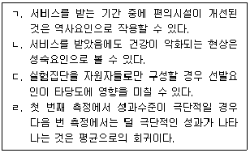
- ㄱ, ㄴ
- ㄱ, ㄷ
- ㄱ, ㄷ, ㄹ
- ㄴ, ㄷ, ㄹ
- ㄱ, ㄴ, ㄷ, ㄹ
(정답률: 36%)
61. 60명의 중학생을 무선 표집하여 세 집단에 무선 할당하고 각 집단마다 다른 교수법을 실행한 후, 학업성취도 검사를 실시하였다. 이에 대하여 분산분석을 실시하지 않고, t검정 분석을 3회 실시하였을 경우 발생할 수 있는 상황에 관한 설명으로 옳은 것을 모두 고른 것은?
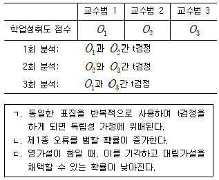
- ㄱ
- ㄱ, ㄴ
- ㄱ, ㄷ
- ㄴ, ㄷ
- ㄱ, ㄴ, ㄷ
(정답률: 28%)
62. 질적 연구에 관한 설명이다. ( )에 들어갈 용어가 순서대로 옳은 것은?
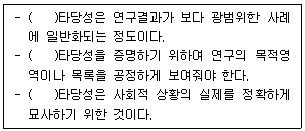
- 외적, 내용적, 생태적
- 생태적, 외적, 내용적
- 내용적, 외적, 생태적
- 외적, 생태적, 내용적
- 내용적, 생태적, 외적
(정답률: 42%)
63. 피험자내 설계의 이월효과를 최소화하기 위한 방안을 모두 고른 것은?
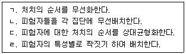
- ㄱ, ㄴ
- ㄱ, ㄷ
- ㄴ, ㄹ
- ㄴ, ㄷ, ㄹ
- ㄱ, ㄴ, ㄷ, ㄹ
(정답률: 25%)
64. 다음 연구설계에 관한 설명으로 옳지 않은 것은?
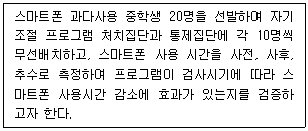
- 2×3 혼합 요인설계(mixed factorial design)이다.
- 집단 변인은 피험자간 요인이다.
- 검사시기 변인은 피험자내 요인이다.
- 집단과 시기 간의 상호작용을 고려한 설계이다.
- 2개의 주효과와 3개의 상호작용 효과를 분석할 수 있다.
(정답률: 24%)
65. 분산분석(ANOVA)에 관한 설명으로 옳은 것을 모두 고른 것은?
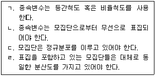
- ㄱ, ㄴ
- ㄴ, ㄷ
- ㄱ, ㄷ, ㄹ
- ㄴ, ㄷ, ㄹ
- ㄱ, ㄴ, ㄷ, ㄹ
(정답률: 28%)
66. 다음의 실험설계 모형을 설명한 내용으로 옳지 않은 것은?
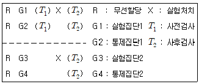
- 통제집단 사전-사후검사 설계보다 내적 타당도를 높여 준다.
- 통제집단 사전-사후검사 설계보다 일반화의 가능성을 높이려는 방법이다.
- G1과 G3의 비교는 처치효과 영향을 알려준다.
- G2와 G4의 비교는 사전검사 효과 여부를 알려준다.
- 실험처치에 사전 검사의 효과를 파악할 수 있다.
(정답률: 17%)
67. 비모수 통계기법에 관한 설명으로 옳은 것은?
- Kruskal-Wallis 검정은 종속변인이 명명척도로 측정된 자료에 사용된다.
- χ2검정에서 각 유목의 관찰빈도는 독립적일 필요가 없다.
- Wilcoxon 검정은 두 독립표본을 검증하는 것으로 측정척도는 최소한 등간척도 이상이어야 한다.
- Mann-Whitney U검정은 종속변인이 최소한 서열척도 이상이어야 한다.
- 소표집의 경우에 단일표집 Kolmogorov-Smirnov 검정이 χ2검정보다 통계적 검정력이 낮다.
(정답률: 25%)
68. 성차별예방 프로그램(group: 실험집단, 비교집단, 통제집단)과 성별(gender: 남, 여)이 성감수성 변화에 효과가 있는지를 알아보고자 하였다. 세 집단(group)에 각각 남학생 10명, 여학생 10명씩을 배치한 요인설계로 분산분석한 결과이다. ( ㅁ )과 ( ㅅ )에 들어갈 숫자의 합은?
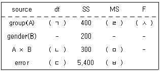
- 80
- 100
- 101.5
- 152
- 200
(정답률: 37%)
69. 통계적 검정력에 관한 설명으로 옳지 않은 것은? (α : 1종 오류, β : 2종 오류)
- 통계적 검정력은 유의도 수준 α가 증가할 때 증가된다.
- 표본의 크기가 증가함에 따라 검정력도 증가한다.
- 통계적 검정력은 1-α로 표현된다.
- 모수치에 관해 구체적인 가정을 할수록 검정력이 더 강해진다.
- 영가설이 거짓일 때 영가설을 기각하는 결정으로 이끄는 확률이다.
(정답률: 25%)
70. 정준상관분석(canonical correlation)에 관한 설명으로 옳은 것은?
- 3개 이상의 변수일 때 변수간의 인과관계를 밝혀 인과모형을 찾아낸다.
- 두 개 이상의 독립변수와 두개 이상의 종속변수와의 관계를 검증한다.
- 종속변수가 범주형 변수일 때 종속변인에 영향을 주는 독립변수가 무엇인지를 밝힌다.
- 종속변수가 이분변수일 때 종속변수에 영향을 주는 독립변수를 찾아낸다.
- 여러 개의 독립변수가 하나의 종속변수에 미치는 영향을 밝힌다.
(정답률: 17%)
71. 부모의 양육유형에 따른 고등학생의 정서에 차이가 있는지를 알아보기 위해 MANOVA를 실시한 결과이다. 분석결과에 관한 설명으로 옳지 않은 것은?
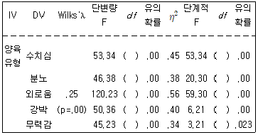
- Wilks'λ 의 유의확률이 유의수준 .⑤에서 양육유형에 따라 학생들의 정서에 차이가 있다.
- Wilks'λ 는 총분산 중 집단간 분산이 차지하는 비율로서 0에 가까울수록 차이가 크다는 의미이다.
- 단계적 F검증은 먼저 투입된 종속변수를 공변인으로 하여 그 효과를 교정한 상태에서 집단간 차이를 검증한 것이다.
- 단변량 F검증 결과와 단계적 F검증 결과 모두에서 양육유형에 따라 학생들의 정서에 통계적으로 유의한 차이(p ＜ .⑤) 있다.
- 양육유형이 수치심 총 변화량의 45%를 설명하고 있다.
(정답률: 24%)
72. 중고등학생 2,000명을 대상으로 다음의 경로모형을 설정하고 경로계수를 추정하였다. 학업수행능력이 학업수행의지에 미치는 전체 효과의 값은?
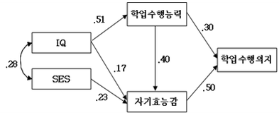
- .30
- .36
- .50
- .70
- .90
(정답률: 17%)
73. 내러티브 탐구에 관한 설명으로 옳은 것을 모두 고른 것은?
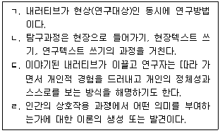
- ㄱ, ㄷ
- ㄴ, ㄹ
- ㄱ, ㄴ, ㄷ
- ㄴ, ㄷ, ㄹ
- ㄱ, ㄴ, ㄷ, ㄹ
(정답률: 46%)
74. 연구윤리에 관한 설명으로 옳지 않은 것은?
- 표절은 연구윤리에서 공정성과 진실성의 문제가 개입된다.
- 연구의 실행 전에 저자순서를 정하여 연구에 기여하고 관여하는 정도를 합의하는 것도 좋은 방법이다.
- 연구의 방법에서 연구의 진행절차를 상세히 기술하고, 논의에서는 연구의 한계를 분명하게 밝힌다.
- 자격을 갖춘 연구자들이 해당 연구 결과를 점검하고 싶어하는 경우, 그들이 원자료를 사용할 수 있도록 해야 할 책임은 없다.
- 연구자의 의무는 선입견, 예측, 사적인 욕구에 이끌리지 않고 결과를 정직하게 보고하는 것이다.
(정답률: 47%)
75. 한 학기 동안 교실에서의 협력행동 증진 프로그램 효과를 검증하기 위해서 5학년 1반은 실험집단, 5학년 2반은 통제집단으로 선정하고 학기 시작과 종료 시 협력행동 척도로 측정하였다. 연구 설계에 관한 설명으로 옳은 것을 모두 고른 것은?
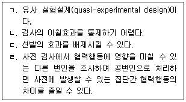
- ㄱ, ㄷ
- ㄴ, ㄹ
- ㄱ, ㄴ, ㄹ
- ㄴ, ㄷ, ㄹ
- ㄱ, ㄴ, ㄷ, ㄹ
(정답률: 25%)